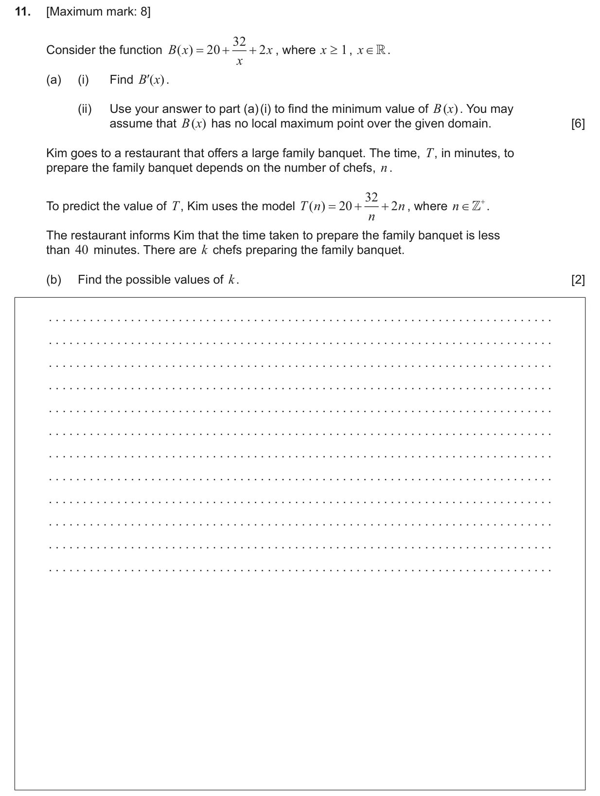
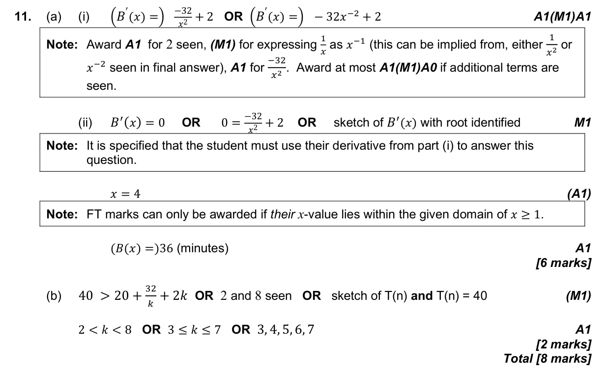

Appears in AI SL P1 Q11AI HL P1 Q7
5.6 Stationary points: local maxima and minima5.3 Differentiating polynomials, n in Z2.4 Key features of graphs
Question

Markscheme

8 marks - Nov P1 TZ1 - Mathematics: Applications and Interpretation SL

